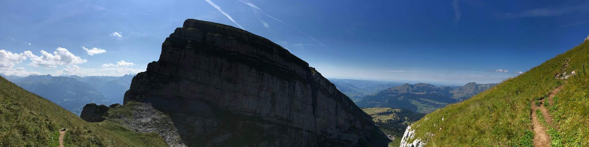
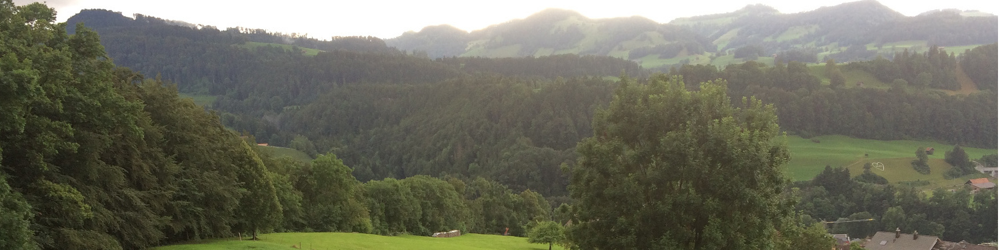

Maxim Mai

Maxim Mai

Maxim Mai

I am an assistant research profesor at The George Washington University. Previously I was a postdoctoral researcher in the HISKP at the University Bonn .
maximmai@gwu.edu
+1 202 9949265
Corcoran Hall
725 21st Street NW
Washington, DC 20052